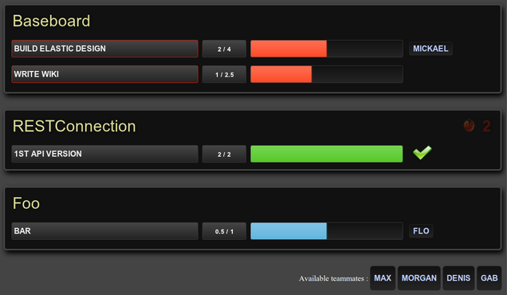

Dashboard for Basecamp projects, with Hudson/Jenkins support.
Screenshot

Introduction
Baseboard is a one-screen dashboard for Basecamp projects.
Check the progress state of one or multiple Basecamp projects at the same time.
Baseboard is a standalone PHP project.
You can easily install it on your own server.
Baseboard is an open-source project.
It is published under MIT license : you can use it Like A Boss !
Features
- Shows multiple projects status on the same screen.
- Displays the pending milestones, and for each of them :
- its progress state, based on what's been quoted in each of its todo list
- its theorical progress state, based on what's been quoted for the whole milestone and the items already done.
- its outdated state, based on its deadline
- the teammates working on it
- Displays the number of open bugs.
- Shows currently unaffected teammates for easy team management.
- Ability to fetch project's stability on a Hudson / Jenkins test server. If a testcase fails, the project will be highlighted.
Requirements
Server requirements : PHP 5.2+ with curl module.
Client requirement : recent navigator.
Help
Help is hosted in the project wiki on Github :
Contributing
Get the source code on GitHub and use pull requests to improve it.
Authors
Baseboard is an open-source side project of PMSIpilot, developped by :


{kind=link}
{kind=link}